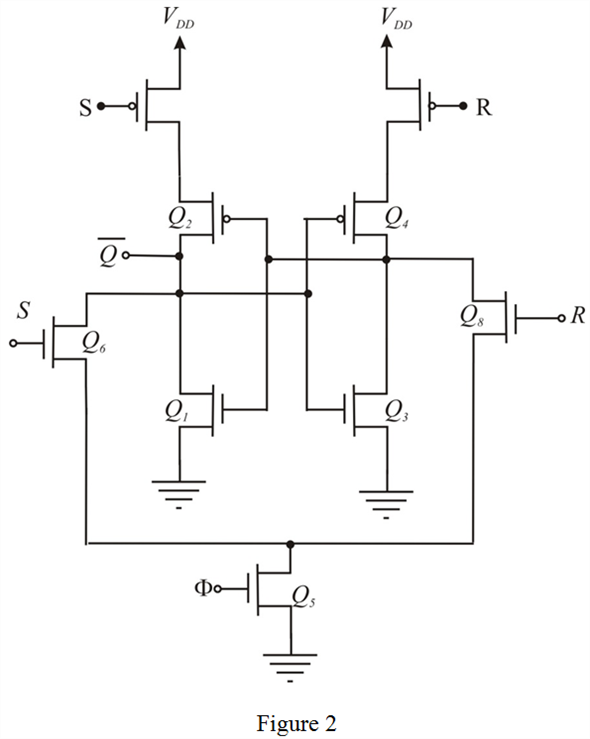

Note further that, an effective version exists in which the transistors, are moved below and transistors, are merged together and form a single transistor. The following is the later design with less number of the transistors:

The main problem with the SR-flip flop is that, it suffers only from the fact that unclocked changes in S and R secondary impact on the output, . Since raising S or R disconnects form  . In some cases this problem may lead to system noise sensitivity in which case or other or both may be added.
. In some cases this problem may lead to system noise sensitivity in which case or other or both may be added.